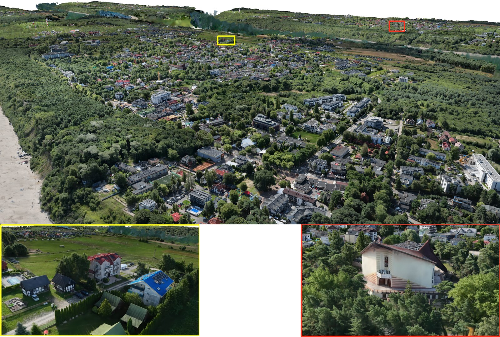

SIGGRAPH 2026 Gaussian Point Splatting：數億 Gaussian 的即時渲染改用隨機點取樣與 GPU atomics
研究提出 Gaussian point splatting，以像素大小的不透明點、64-bit atomics 與階層式 frustum／occlusion culling 渲染大量 Gaussian，展示數億 splats 的即時能力。

研究 ★★★★☆
完整分析
技術方向
傳統 Gaussian splatting 需要處理大量半透明 splat 的排序與混合；這項方法改成從每個 Gaussian 隨機取樣像素大小的不透明點，以 64-bit atomics 寫入 framebuffer，再用數學方式校正每個 Gaussian 的取樣量與 opacity。
製作潛力
若能把數億 Gaussian 保持在即時範圍，對大型掃描場景、數位孿生或 neural capture 的可視化很有吸引力；階層式 frustum 與 occlusion culling 也更接近實際引擎需要的規模化策略，而不是只展示小型 benchmark。
成熟度判斷
目前仍是研究型渲染方法，輸出與傳統 splatting 之間會有輕微 noise 與 aliasing 差異。導入前應用動態鏡頭、薄幾何、透明邊緣與 VR 解析度測 temporal stability，再評估是否適合 production，而非只看靜態 FPS。